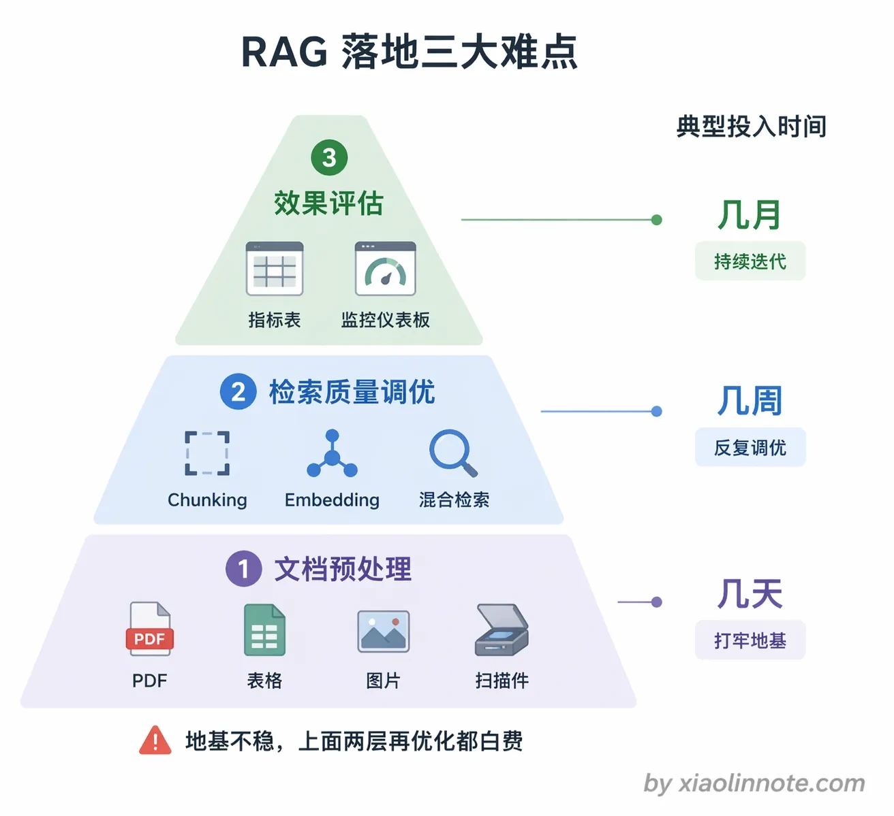
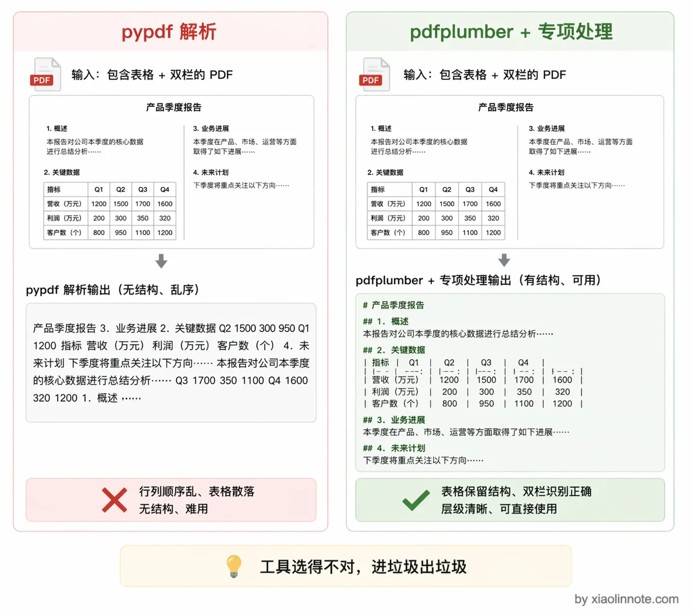
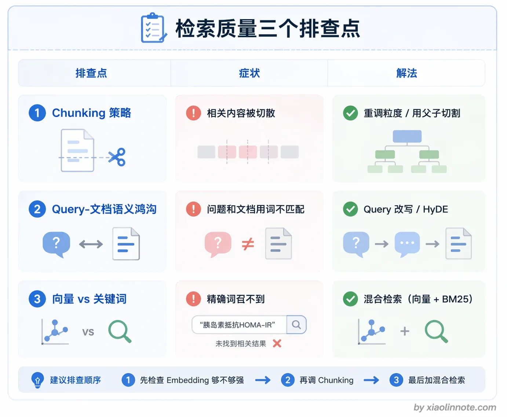
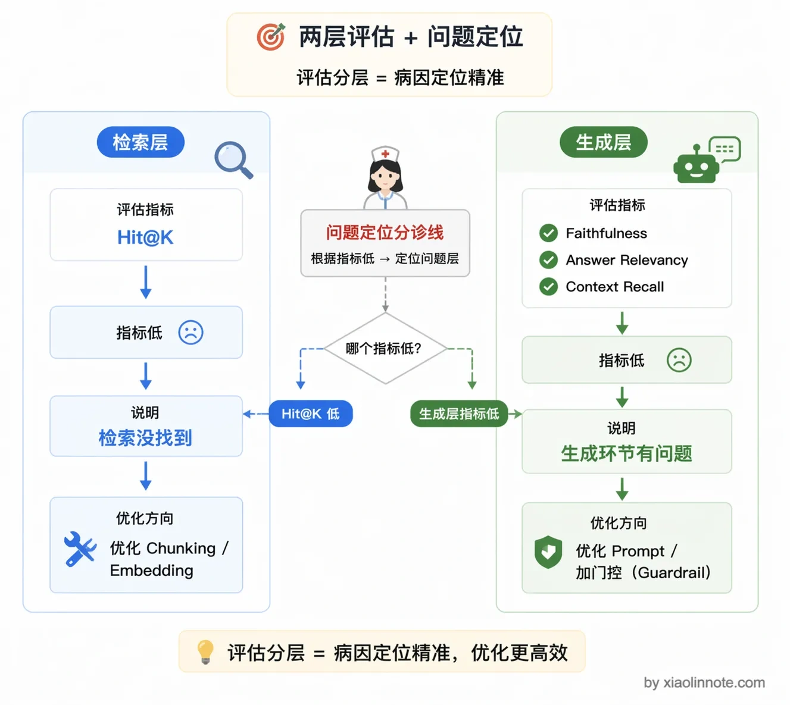
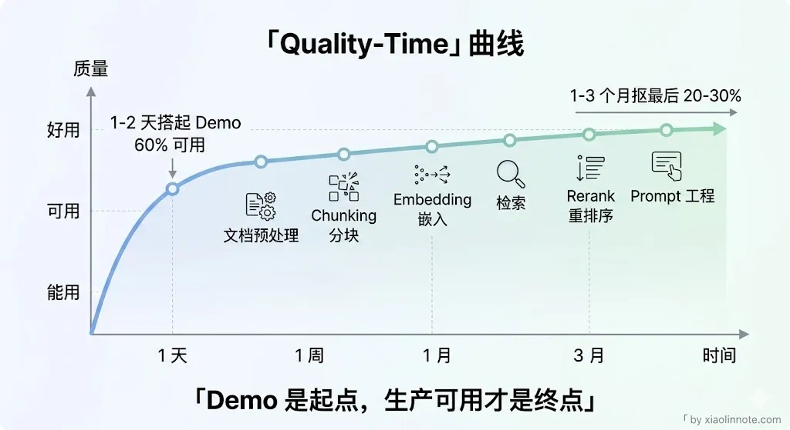

在实际落地中，你觉得 RAG 最难的地方是哪里？
👔面试官：RAG 你也做了一段时间了，你觉得实际落地中最难的地方在哪？
🙋♂️我：我觉得最难的是 Embedding 模型的选型，模型不好向量就不准，后面效果肯定差。
👔面试官：Embedding 选型确实重要，但你说的是其中一个点，我问的是整体上最难的地方。而且你只说了模型，那文档解析乱码、chunk 切割不合理、效果没法评估这些问题呢？
🙋♂️我：对对，还有 chunk 切割也很头疼，切大了检索不准，切小了上下文丢了。
👔面试官：你这东一榔头西一棒槌的，说了半天也没个体系。我问的是你怎么系统地看待 RAG 落地的难点，能不能把它分层说清楚。
让我们来系统地梳理一下 RAG 落地过程中最难啃的几块骨头。
💡 简要回答
我觉得 RAG 难点不在于把 Demo 跑起来，而在于把数据、检索、生成、更新和评估做成可重复、可回滚、可观测的系统。常见高风险点有三类：输入文档质量与权限、检索/证据链调优、分层评估和线上反馈；实际还要考虑延迟、成本与安全。
第一是文档预处理，原始数据的格式五花八门，PDF 里面的表格、图片、嵌套的格式，处理不好就是一堆乱码进了知识库，进去的是垃圾出来的也是垃圾。
第二是检索质量的调优，向量召回不准是整个系统效果的天花板，但问题来源很多，Chunking、Embedding、Query 改写，任何一个环节出问题都会影响结果，排查起来很费劲。
第三是效果评估，答案对不对很难系统性地衡量，不知道是哪个环节出了问题，优化就变成了瞎猜。
📝 详细解析
第一难：文档预处理
RAG 系统的效果受多个环节影响，文档预处理是重要的输入质量环节，但不是唯一瓶颈。解析、结构恢复、OCR、表格/图片处理、元数据和权限如果出错，会把错误带入 Chunking、Embedding、检索与生成；因此应保留原文、解析结果、质量检查和可重处理版本。

你可能会想，文档预处理不就是读文件吗？有什么难的？难就难在现实世界的文档格式五花八门，远比想象中复杂。
PDF 解析库的能力边界不同：有的更偏文本流读取，有的提供版面、表格或元素级抽取。表格、双栏、扫描件、嵌套版式都可能出现顺序或结构错误；应按文档样本比较工具，做页码/坐标/表格结构校验，而不是简单给某个库贴上“能/不能处理复杂 PDF”的标签。

例如产品规格表被抽取成缺少列边界的文本时，型号、内存、价格的对应关系可能丢失；这类错误应在入库前通过结构化抽样或规则检测发现，不能指望 Embedding 自动恢复表格关系。
这样的内容存进向量库，不管 Embedding 模型多好，检索出来也是废的。进去的是垃圾，出来的也是垃圾。
处理方案可以组合版面/表格抽取、OCR、规则清洗和多模态模型。多模态模型的成本、吞吐、许可和质量取决于供应商/模型与图片分辨率，应先对高价值或难解析页面做路由和抽样评估，不要套用固定倍数或默认适合某类文档。
除了 PDF，还有扫描版文档（需要 OCR）、包含大量图片的文档（图片里的关键信息文本提取不到）、代码文档（代码块切割不当会破坏逻辑完整性）。每种格式都是一个坑，真正的生产系统文档预处理的代码量往往比 RAG 核心逻辑还多。
第二难：检索质量调优
文档预处理保证了输入质量，但如果检索这一步不准，前面的努力就全白费了。检索质量是整个 RAG 系统效果的天花板，检索召回不到相关内容，后面的 LLM 再强也没用。但检索质量差的原因可能来自好几个地方，定位起来特别麻烦。

Chunking 策略是第一个排查点。chunk 切得不好，用户问的问题和知识库里的相关内容语义对不上。比如用户问「退款流程是什么」，但知识库里的文档是按产品分类组织的，退款相关的内容被切散在十几个不同的 chunk 里，每个 chunk 单独来看相关度都不高，导致召回的都是些边缘内容。
Query 和文档的语义鸿沟是第二个排查点。用户的提问往往是口语化的，而知识库里的文档是正式的技术或业务语言。比如用户问「这个功能怎么用不了」，文档里的表述是「系统故障排查指南」，向量相似度可能不高，导致正确的文档没被召回。解法是 Query 改写，或者在存文档时也为每个 chunk 生成几个可能的提问形式一起存进去（假设性问题增强）。
还有一个容易忽视的问题：向量检索对精确词语效果差。很多人以为向量检索什么都能搜，其实不是。产品型号「Pro Max 256GB」、专有名词、缩写等，纯向量检索往往不如 BM25 关键词检索。生产环境里通常要做混合检索，向量检索和关键词检索各召回一批，再合并去重，效果比单独用任何一种都好。
第三难：效果评估困难
检索质量调优费劲，但更让人头疼的是：你怎么知道调完之后变好了还是变差了？RAG 系统上线之后，你怎么知道它好不好？这个问题比看起来难得多。
单条答案的对错人工判断成本高，而且不同人的标准不一样。端到端的指标（用户满意度、解决率）反馈周期太长，出了问题不知道是 Chunking 的锅还是检索的锅还是 LLM 生成的锅。
工程上比较实用的做法是把评估拆成两层。

第一层是检索/证据层评估，不看 LLM 如何措辞，只看必要证据是否进入候选、是否通过权限和版本过滤、是否被排到可用位置。可用 Hit@K、Recall@K、MRR、nDCG、引用覆盖或实体/版本命中等指标，前提是有清晰的标注或参考证据。
第二层是端到端评估，用 RAGAs 这类框架自动打分。RAGAs 主要评估三个维度。
- Faithfulness（忠实度）衡量 LLM 的答案有没有编造知识库里没有的内容，高 Faithfulness 说明模型老老实实在复述检索到的内容，没有瞎编。
- Answer Relevancy（答案相关性）看答案和问题是否对应，防止模型「答非所问」。
- Context Recall（上下文召回率）看检索出来的内容是否覆盖了回答问题所需的全部知识，这个指标低说明检索层遗漏了关键信息。
三个指标结合起来，基本能定位是检索层的问题还是生成层的问题。
总结来看，Demo 与生产可用之间的工作量不能用一两天或几周等固定时间概括。交付周期取决于数据源数量、解析复杂度、评估集、合规要求、SLO、团队与部署环境；应按风险分阶段，用回归结果决定是否扩大范围。

🎯 面试总结
回到面试官的问题，RAG 落地最难的不是单点技术选型，而是整个链路上每个环节都可能成为瓶颈，而且环环相扣。
系统来说有三类常见难点。第一是文档预处理与治理：表格、扫描件、复杂排版、版本和权限都可能让输入失真；第二是检索/证据链调优，需要区分解析、切分、查询、召回、排序和上下文问题；第三是分层评估与线上反馈，要同时看质量、安全、延迟、成本、拒答和解决率。
第二是检索质量调优，Chunking 策略、语义鸿沟、精确词召回这三个问题交织在一起，排查起来非常费劲。
第三是效果评估，没有量化指标体系就不知道该优化哪里，优化变成了瞎猜。
面试中回答这类问题，关键是要能分层、有体系地说明难点在哪，而不是东一榔头西一棒槌地罗列问题。